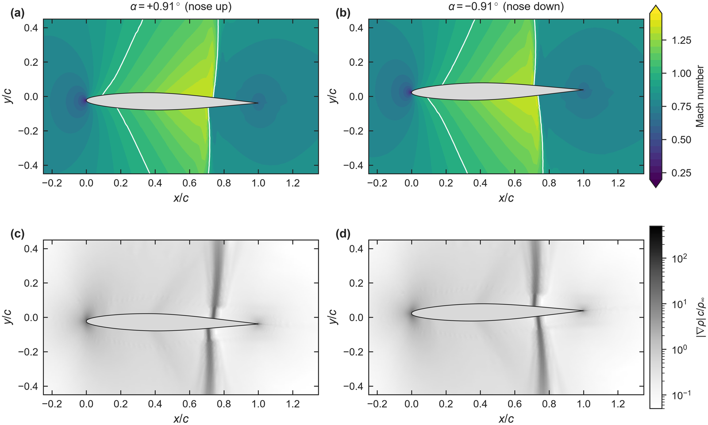
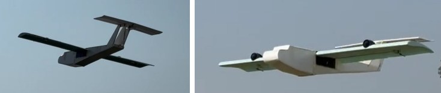
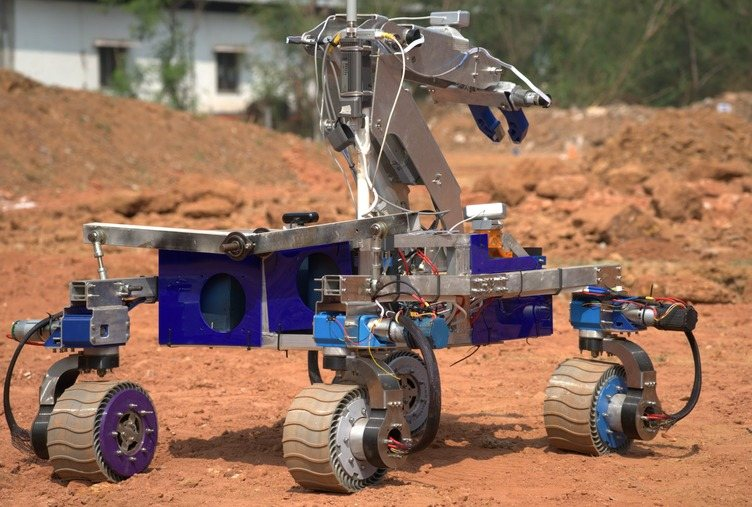
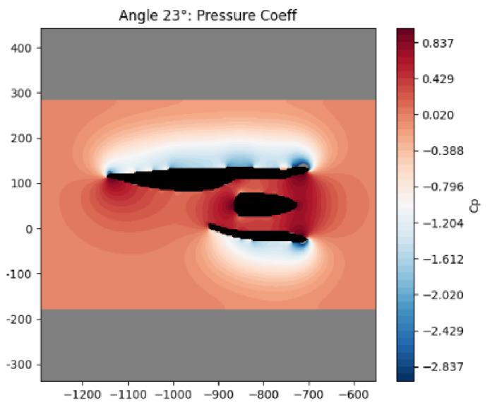
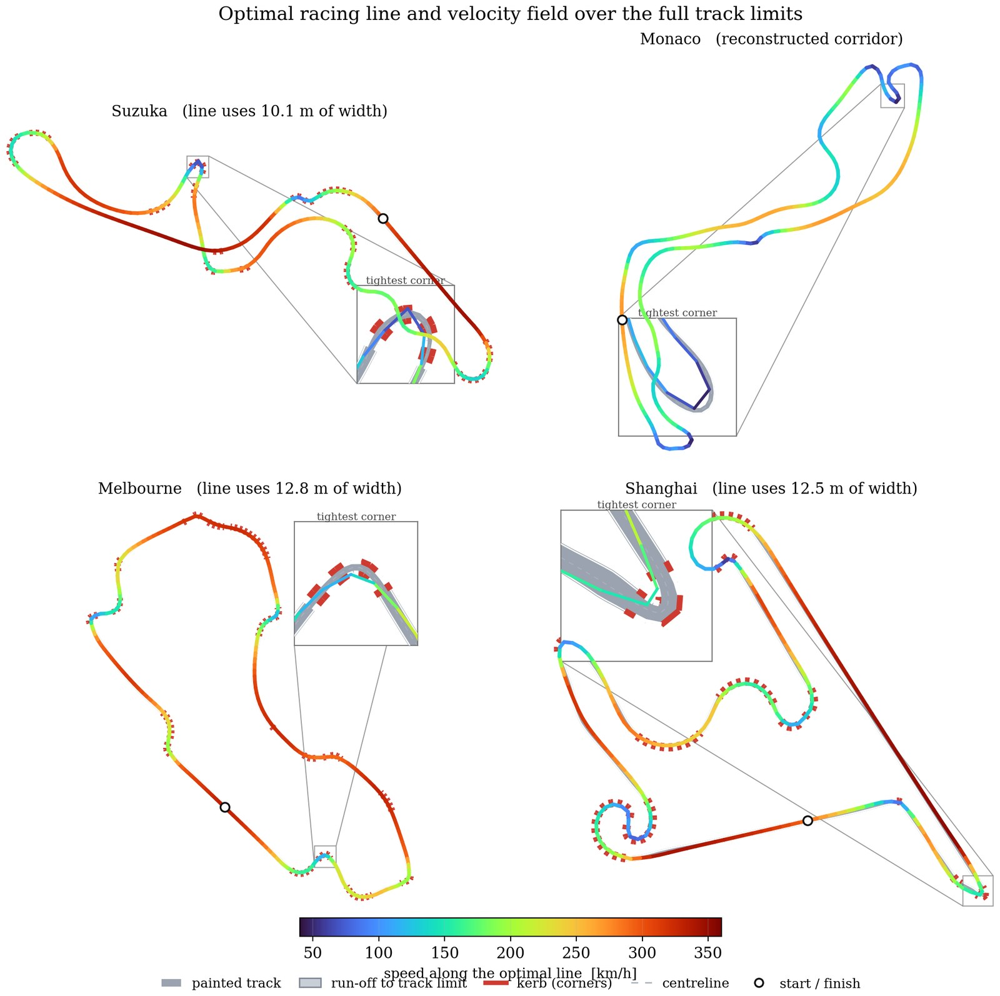

Research Projects
Publications →
How the Elastic Axis Folds the Transonic Flutter Boundary
Shows how moving the elastic axis reshapes the transonic flutter boundary of a pitching and plunging wing section, and explains the resulting fold through energy transfer from shock motion, using SU2 Euler simulations and an actively learned, conformally calibrated surrogate.

RANS-Verified Surrogate Design of Wing Sections for a uSTOL Aircraft
Trains a surrogate on CFD results to search for wing sections that meet design targets, then checks the final designs with RANS CFD: across a tenfold range of Reynolds number and two turbulence models, predicted drag and lift held within 2.3% and 2.4%. The system supplied the clean-wing section of the flying uSTOL prototype.

3D-Printed Cam Switch for Steering-Mode Transitions in a 4WIS Rover
A low-cost 3D-printed rotary cam, with an encoder confirming each switch, that lets a four-wheel independently steered rover change reliably between turning on the spot and Ackermann steering; tested on the CRISS autonomous rover.

Rapid Aerodynamic Optimization of Engine Nacelles
A fast Python framework for shaping engine nacelles with an in-house viscous–potential flow solver, showing that local reshaping of the nacelle lip can narrow the design space before expensive Navier–Stokes simulations.

A Critical-Layer Instability of Structural-Acoustic Wall Modes in a Two-Flexible-Plate Channel
Identifies a new convective instability of the wall mode in a flexible-walled channel with Poiseuille flow, driven by the critical layer; it grows with wall flexibility and vanishes for rigid walls. Also derives closed-form low-Mach corrections for all coupled modes.

Joint Optimisation of Active Aerodynamics and Electric Energy Deployment in 2026 Formula One
Finds the fastest 2026 Formula One qualifying lap by optimising the use of movable aerodynamics and electrical energy within the new regulations, by direct collocation in CasADi/IPOPT; once calibrated, predicted lap times match real 2026 pole laps within 0.17%.

Frequency-Domain Analysis of Thermoacoustic Coupling in Liquid-Propellant Rocket Engines
A COMSOL frequency-domain model of how acoustic waves couple with heat release in a rocket combustion chamber, used to screen chamber shapes and damping early.
Continuous-Wave Rotor Pressure Exchanger for Supercritical CO2 Cycles
Experimental study of a pressure exchanger that controls the pressure waves inside its rotor channels; it reached 49% higher isentropic efficiency than conventional rotary-blade designs.

Conjugate Thermal Management of a Liquid-Cooled 14S4P Battery Pack
A coupled electrochemical–thermal model with an Arrhenius ageing law, holding the temperature rise below ~8 °C with no hotspots and state of health above 0.80 under continuous discharge.